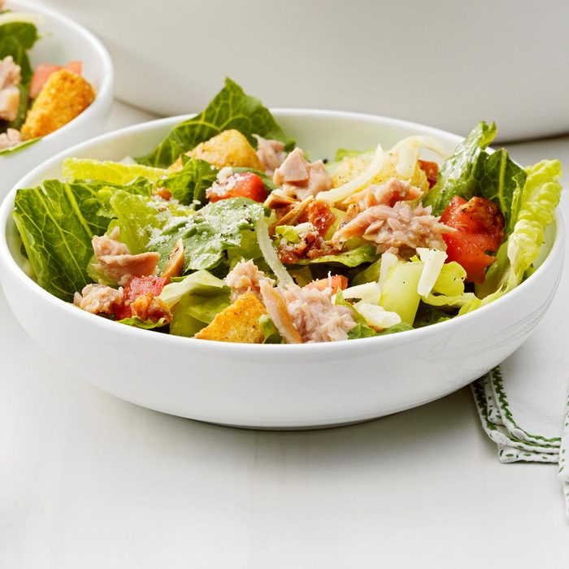

Tuna Salad

Description
A great tuna salad
Ingredients:
- 3/4 cup canola oil
- 1/4 cup lemon juice
- 2 garlic cloves, minced
- 1/2 teaspoon salt
- 1/2 teaspoon pepper
- 2 bunches (1 pound each) romaine, torn
- 2 cups chopped tomatoes
- 1/2 cup shredded Swiss cheese
- 2 cans (5 ounces each) Chicken of the Sea® chunk light tuna in water, drained
- 2/3 cup slivered toasted almonds, optional
- 1/2 cup grated Parmesan cheese
- Optional: Crumbled cooked bacon and Caesar salad croutons
Steps:
- In a jar with a tight-fitting lid, combine oil, lemon juice, garlic, salt and pepper; cover and shake well.
Chill.
- In a large serving bowl, toss romaine, tomatoes, Swiss cheese, tuna, almonds if desired, and Parmesan
cheese.
- Shake dressing; pour over salad and toss. Add bacon and croutons, if desired; serve immediately.
Home page